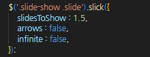
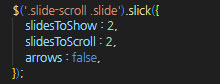
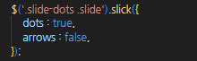
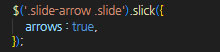
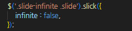
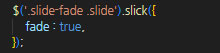
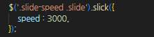
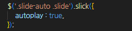

JS Slick 슬라이드 라이브러리
참고 :: https://github.com/kenwheeler/slick
웹 페이지를 구성함에 있어 슬라이드의 사용은 아주 빈번하다. 특히나 비주얼 영억, 이벤트/기획전 페이지에서 많이 사용하게 되는데 슬라이드를 구현할때 자주 사용되는 플러그인중 하나인 'Slick' 에 대한 내용을 담았다. Slick은 Swiper 플러그인과 비교를 필연적으로 하게된다. 둘 다 훌륭한 플러그인 이라는건 확실하며, 특정 상황과 퍼포먼스 등 여러 요인에서 같은 사이트라도 동시에 사용 되는 경우도 있다. Slick은 Swiper 보다 옵션 종류는 적지만, 사용법과 구성이 비교적 간단하다. 또한 Jquery 기반의 플러그인으로 Jquery를 필수로 한다.
기본 HTML 태그 형태는 위의 이미지 형태이며, 여러 옵션으로 추가 태그 생성 및 도트,화살표관리 등 동적 표현이 가능하다.
■ 주로 사용하는 옵션
-
- slidesToShow : num,
화면에 보여질 슬라이드 숫자
1.25 같은 소수로도 사용 가능하다. 기본값 : 1 -
- slidesToScroll : num,
슬라이드시 넘어갈 유닛 숫자
1.25 같은 소수로도 사용 가능하다. 기본값 : 1 -
- dots : boolean,
페이지네이션 (도트)
도트는 CSS로 변형 가능하다. 기본값 : false -
- arrows : boolean,
좌우 제어 버튼 (화살표)
화살표는 CSS로 변형 가능하다. 기본값 : true -
- infinite : boolean,
무한반복 유무 기본값 : true
 -
- fade : boolean,
fadeInOut - 서서히 나타나고, 사라지는 효과 기본값 : false
 -
- speed : num,
속도 제어
1000 = 1s 기본값 : 300 -
- autoplay : boolean,
자동 재생 제어 기본값 : false
 -
- : num,
-
- : num,
- - autoplaySpeed : 500, // 자동 플레이 시간 제어 - pauseOnHover : false, // 마우스 hover시 일시정지 유무 - pauseOnFocus : false, // 해당 slide에 포커싱 되었을시 일시정지 유무 /* 추가 옵션 ----- 사용 가능 및 편의성 위주 */ swipe : true, // 스와이프 (마우스 드래그, 터치 드래그) 제어 draggable : true, // drag 효과 제어 touchMove : true, // 터치에 따른 슬라이드 움직임 제어 :: 모바일 UI touchThreshold : 5, // swiper 하여 슬라이드를 전환시 요소 넓이를 1/5 이상 슬라이드하여 전환 pauseOnDotsHover : false, // 슬라이드 페이지네이션(도트) hover 일시정지 유무 centerMode : true, // 센터 모드 제어 :: slideToShow 짝수일 경우 비활성화 centerPadding : '50px', // 센터 패딩 제어 :: 센터 모드시 제어 가능 adaptiveHeight : true, // 높이값이 다른 슬라이드를 현재 활성화된 슬라이드에 맞춤 cssEase : 'ease', // css ease 효과 커스터마이징 easing : 'swing', // ease 효과 커스터마이징 mobileFirst : false, // mobile 일때 responsive 제어 initialSlide : 2, // 처음 보여지는 unit 설정 :: 0 에서부터 index waitForAnimate : true, // 애니메이션 활성화시 동작 제어 dotsClass : `slick-dots slide-page-dot`, // dot 부모 ul class 제어 :: slick-dots 는 기본값 // nextArrow : '' -- 우측 제어 버튼 커스터마이징 // prevArrow : '' -- 좌측 제어 버튼 커스터마이징 // rtl : true, -- 슬라이드 제어 방향을 오른쪽에서 왼쪽으로 useCSS : true, // CSS Transitions 활성화/비활성화 useTransform : true, // CSS Transforms 활성화/비활성화 vertical : false, // 세로방향 슬라이드 verticalSwiping : false, // 수평인 스와이프 방향을 변경 :: true값일 경우 세로로 변경 responsive : [ // 반응형 제어 :: breakpoint - 반응형 구간, settings - 구간에 따른 설정 변경 { breakpoint : 1200, settings : { fade : false, } }, { breakpoint : 375, settings : { fade : true, } } ], accessibility : true, // 접근성 asNavFor : '', // 동기화 :: 2개 이상 제어시 사용 /* 커스터마이징 페이지네이션 - dots : true 필요 customPaging: function (slider, i) { console.log(slider.$slider[0]); 아래 마크업처럼 적용할 버튼들의 마크업을 대입 slick내부에서 슬라이드 개수 만큼 for문으로 생성 ( 슬라이드 개수 만큼 복제 ) return ''; } */ edgeFriction : 0.15, // 슬라이드 가장자리를 넘길때의 저항값 지정 focusOnSelect : false, // 선택한 요소에 focus 여부 :: click focusOnChange : false, // 클릭하여 선택한 요소에 초점 제어 variableWidth : false, // 슬라이드 너비 자동계산을 비활성화, true 값일 경우 활성화되어 자동으로 맞춘 슬라이드 너비가 해제 zIndex : 1000, // 슬라이드의 z-index 값을 설정 :: IE9 이하의 브라우저에서 유용 현재는 사용하지않아도 무관